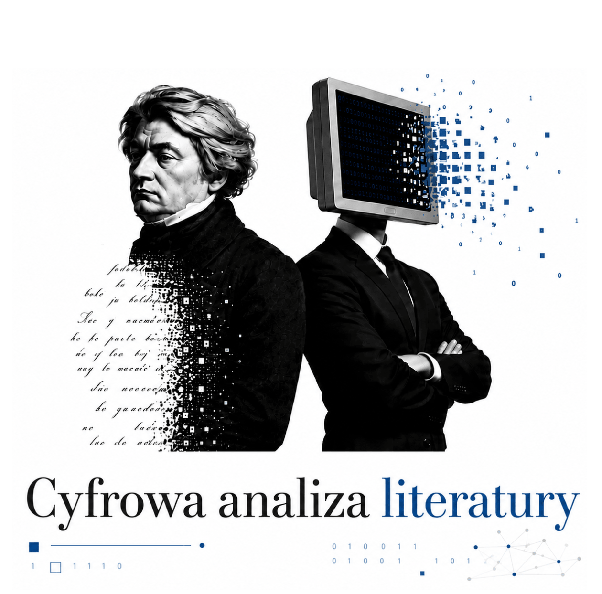
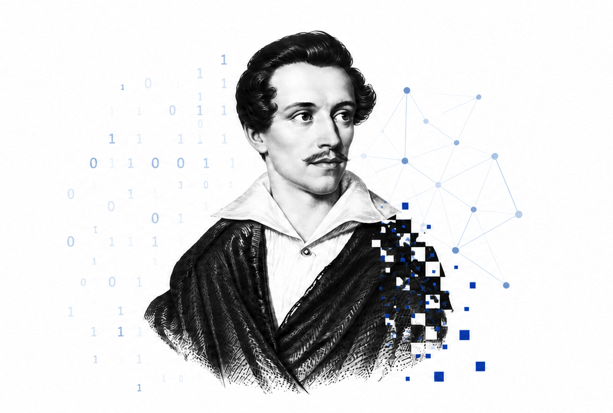
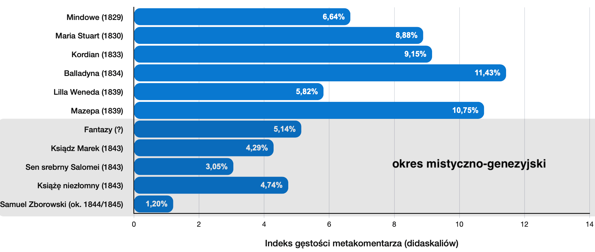
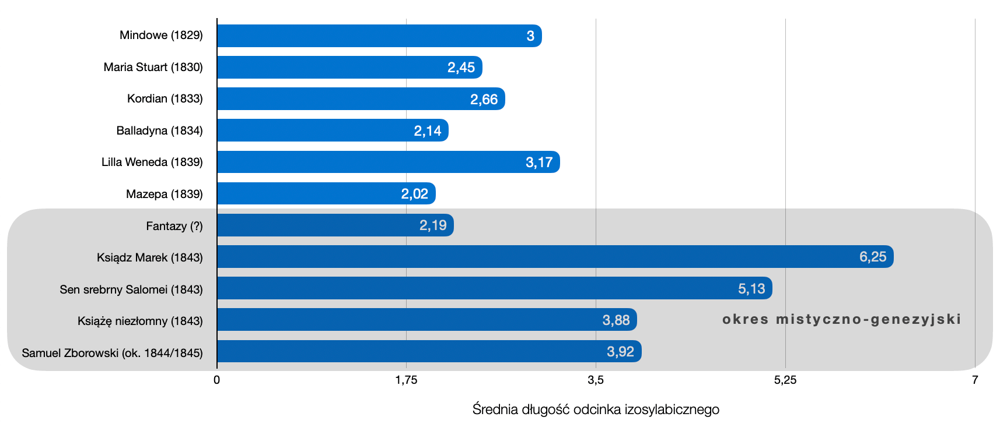
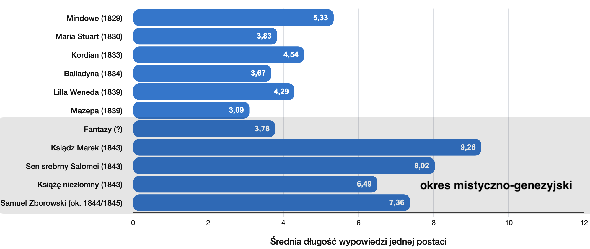
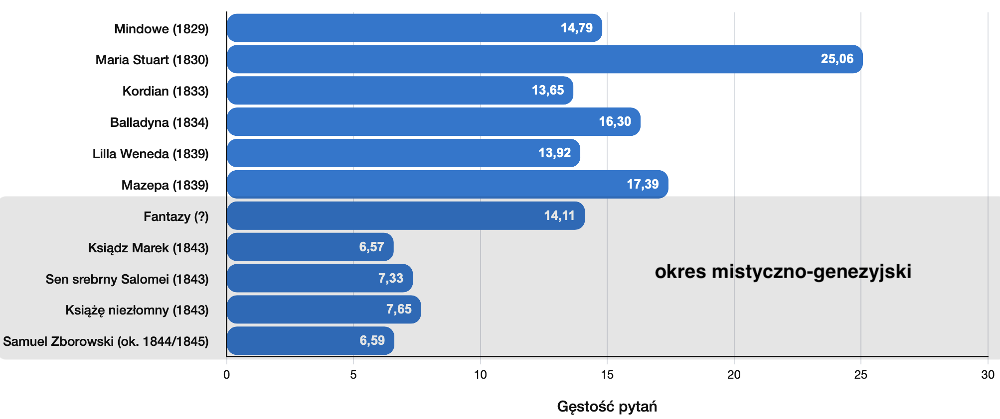
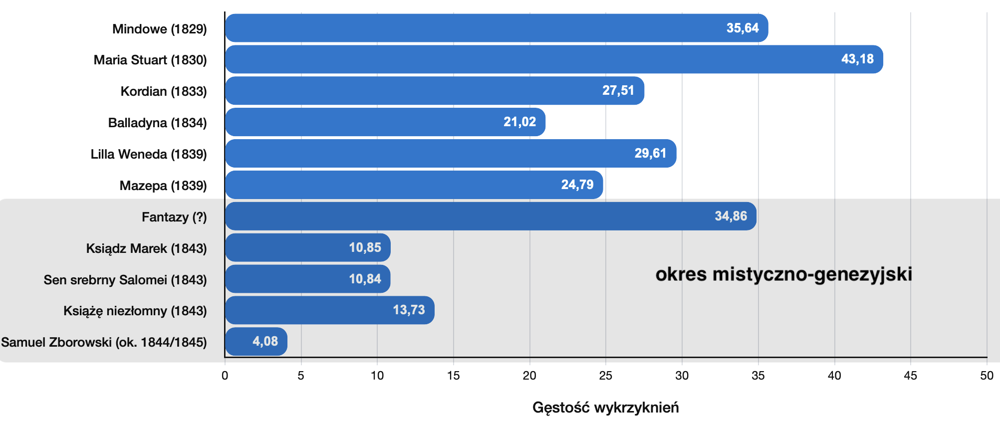
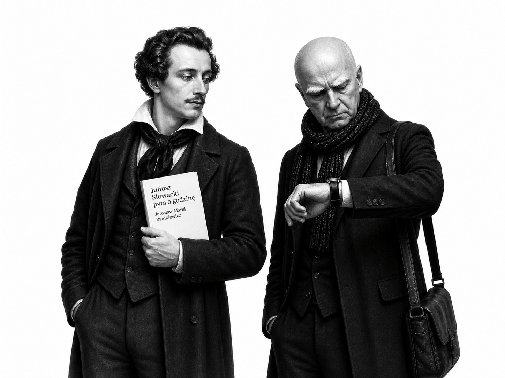

01
Rozkład metryczny wypowiedzi wybranych postaci
Umożliwia porównanie dominujących metrów w wypowiedziach różnych bohaterów.

Strona umożliwia przeanalizowanie tekstu dowolnego wierszowanego dramatu napisanego w języku polskim pod kątem jego zróżnicowania wersyfikacyjnego oraz innych parametrów analizy cyfrowej, takich jak:
Umożliwia porównanie dominujących metrów w wypowiedziach różnych bohaterów.
Pozwala określić m.in. stopień stabilności rytmicznej analizowanego tekstu.
Ilustruje gęstość interakcji między postaciami i pomaga porównywać dynamikę dialogu.
Odzwierciedlają gęstość wykrzyknień i pytań.
% linijek wypowiedzi, które nie kończą się znakiem interpunkcyjnym sygnalizującym zamknięcie struktury składniowej.
Liczba wystąpień didaskaliów względem długości tekstu głównego.
Pokazuje gęstość apartu.
Mierzy gęstość zaimków osobowych i dzierżawczych związanych z 1. osobą liczby pojedynczej.


Wielu badaczy zauważa znaczącą zmianę w sposobie pisania
Słowackiego w okresie mistyczno-genezyjskim. Jej formalnym
wykładnikiem jest na przykład ograniczenie przez poetę
„romantycznych tendencji do rozbudowywania wszelkich
metawypowiedzi (didaskaliów, prologów, wstępów)”[1]. O tej specyficznej na tle poetyki dramatu romantycznego
właściwości późnych utworów Słowackiego wspominała (za
Ireną Sławińską[2]) Ewa Nawrocka:
zwrócono uwagę na nikłość i lakoniczność uwag
inscenizacyjnych w mistycznych dramatach
Słowackiego i tendencję do ich ograniczania,
a zarazem poszerzenie tekstu głównego o informacje
dotyczące przestrzeni i czasu

Innym formalnym wykładnikiem transformacji tekstów późnego Słowackiego jest m.in. zmiana średniej długości odcinka izosylabicznego (obrazująca zwiększenie stabilności rytmicznej tekstów mistyczno-genezyjskich):

zmiana średniej długości wypowiedzi jednej postaci (ilustrująca zmianę dynamiki interakcji między postaciami):

a także zmiana współczynnika łamania wiersza (związana ze znacznym zanikiem sygnalizowania końca struktury składniowej w wygłosie):

oraz wyraźne wyciszenie pytań i wykrzyknień (świadczące być może o przejściu od emocji i epistemologicznej niepewności do pewności – ton staje się bardziej profetyczny i płynny):




Jak działa ten algorytm?
 Skrypt przelicza liczbę sylab dla każdego wersu na
podstawie identyfikacji samogłosek, które w danej
pozycji pełnią funkcję sylabotwórczą. Nie robi tego w
100% bezbłędnie — nie wykryje np., że kombinacja [ia]
występująca na granicy morfemów (jak w wyrazie
miniaparatura) utworzy 2 sylaby (stąd całe słowo
będzie 7-sylabowe), ponieważ [i] — dość wyjątkowo jak na
język polski (bo pomimo sąsiedztwa innej samogłoski z
prawej strony) — będzie ośrodkiem osobnej sylaby. Nie
wykryje także dyftongów takich jak [au] (por.
tau-to-lo-gia, ale
na-uka) lub [oi] (por.
si-nu-soi-da, ale
He-lo-i-sa). Błędy wynikające z
takich (m.in.) wyjątków nie wpłyną znacząco na
statystyki dla długich tekstów. Narzędzie nie wskazuje
przypadków, w których na jeden wers metryczny przypadają
repliki dialogowe różnych postaci; umożliwia natomiast
wykluczenie ich z analizy ręcznie poprzez wprowadzenie
znaku ++ przed konkretnymi linijkami tekstu.
Skrypt przelicza liczbę sylab dla każdego wersu na
podstawie identyfikacji samogłosek, które w danej
pozycji pełnią funkcję sylabotwórczą. Nie robi tego w
100% bezbłędnie — nie wykryje np., że kombinacja [ia]
występująca na granicy morfemów (jak w wyrazie
miniaparatura) utworzy 2 sylaby (stąd całe słowo
będzie 7-sylabowe), ponieważ [i] — dość wyjątkowo jak na
język polski (bo pomimo sąsiedztwa innej samogłoski z
prawej strony) — będzie ośrodkiem osobnej sylaby. Nie
wykryje także dyftongów takich jak [au] (por.
tau-to-lo-gia, ale
na-uka) lub [oi] (por.
si-nu-soi-da, ale
He-lo-i-sa). Błędy wynikające z
takich (m.in.) wyjątków nie wpłyną znacząco na
statystyki dla długich tekstów. Narzędzie nie wskazuje
przypadków, w których na jeden wers metryczny przypadają
repliki dialogowe różnych postaci; umożliwia natomiast
wykluczenie ich z analizy ręcznie poprzez wprowadzenie
znaku ++ przed konkretnymi linijkami tekstu.
Dostępne są 3 sposoby wprowadzenia tekstu:
Poniżej znajduje się biblioteka dramatów przygotowanych pod wymagania skryptu (docelowo teksty zostaną dostosowane także do standardu TEI/XML). Dorzucono tu m.in. te utwory, które nie zostały opracowane przez serwis Wolne Lektury (jak np. Samuel Zborowski J. Słowackiego).
Nie znaleziono dramatów pasujących do wpisanej frazy.
⇄ Przewijaj w poziomie, aby zobaczyć więcej pozycji
Przegląd wskaźników analizy cyfrowej dramatu.
| Treść wersu | Lb. sylab | Bohater |
|---|